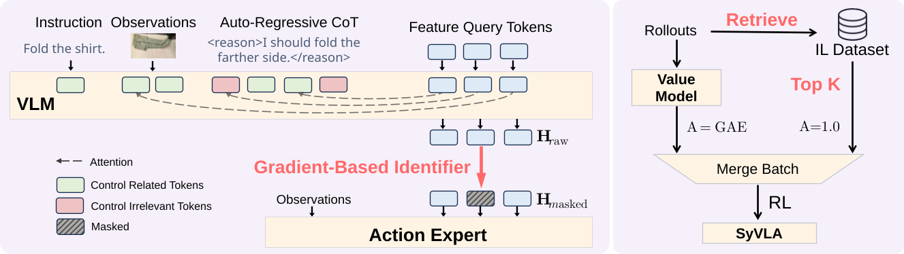
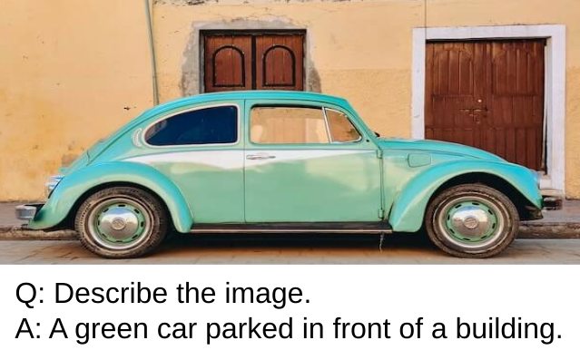

Scaling by Diversified Experience for Vision-Language-Action Models
Abstract
Vision-Language-Action models face significant challenges in real-world deployment due to the entanglement of high-level reasoning with low-level control, and the instability of policy optimization. In this paper, we introduce SyVLA, a robust VLA model trained with diversified experiences. We propose an Intention Decoupling algorithm to isolate control-relevant features from reasoning contexts and a similar-sample guided RL pipeline to stabilize policy updates and mitigate distribution shift. Extensive experiments on real-world robotic tasks and multi-modal benchmarks demonstrate that SyVLA achieves superior task success rates and stronger out-of-distribution generalization compared to existing methods, while effectively preserving core vision-language capabilities.
Highlights

We propose SyVLA, a novel Vision-Language-Action (VLA) model that achieves a strong balance between robotic task competence and the preservation of general vision-language capabilities.
Recent SOTA VLA models remain limited by two fundamental challenges: (1) decoupling control intention from high-level reasoning, and (2) enabling stable real-world reinforcement learning to bridge the gap between imitation learning objectives and actual task success.
To tackle these challenges, we introduce an Intention Decoupling algorithm that gradient-masks control-irrelevant Feature Query Tokens, preventing the Action Expert from being misled by high-level reasoning information. We further develop a Similar-Sample Guided RL pipeline, which retrieves semantically similar expert trajectories to stabilize policy updates and mitigate policy collapse during real-world reinforcement learning.
Extensive experiments are conducted on three challenging real-world tasks (folding shirts under location change, solving arithmetic instructions while wrapping cubes, and bagging snacks with vague natural language commands) as well as on multiple multi-modal benchmarks. Remarkably, SyVLA achieves the highest average success rates in both in-domain and out-of-distribution settings, using less than 5% of the pretraining data of prior industrial models. At the same time, it preserves strong vision-language reasoning and significantly outperforms other VLA models on visual question answering benchmarks.
Overall, this work demonstrates that with careful architectural design and stable RL integration, VLA models can excel simultaneously at dexterous manipulation and general-purpose multimodal understanding — a substantial step toward open, generalizable embodied intelligence.
Real-World Robot Results
| Method | In Domain | Out of Distribution | ||||||
|---|---|---|---|---|---|---|---|---|
| Task 1 | Task 2 | Task 3 | Avg. Success Rate | Task 1 | Task 2 | Task 3 | Avg. Success Rate | |
| OpenVLA-oft | 0.71 | 0.29 | 0.36 | 0.45 | 0.55 | 0.11 | 0.07 | 0.24 |
| GR00T | 0.71 | 0.21 | 0.21 | 0.38 | 0.64 | 0.07 | 0.00 | 0.24 |
| Wall-Oss | 0.50 | 0.18 | 0.14 | 0.27 | 0.14 | 0.04 | 0.00 | 0.06 |
| Pi0 (pretrained) | 0.93 | 0.39 | 0.57 | 0.63 | 0.78 | 0.29 | 0.36 | 0.48 |
| Pi0 (from scratch) | 0.64 | 0.21 | 0.29 | 0.38 | 0.50 | 0.14 | 0.14 | 0.26 |
| ChatVLA | 0.21 | 0.29 | 0.14 | 0.21 | 0.00 | 0.21 | 0.07 | 0.09 |
| SyVLA (ours) | 0.86 | 0.68 | 0.64 | 0.73 | 0.78 | 0.57 | 0.57 | 0.64 |
Results on real world tasks. We evaluate multiple models under both In Domain and OoD settings. The experimental results show that our SyVLA significantly outperforms other strong baselines and exhibits better generalization ability.
Multi-modal Benchmarks
| DocVQA | AI2D | MMMU | MME | HallBench | |
|---|---|---|---|---|---|
| OpenVLA-oft | - | - | - | - | - |
| Wall-Oss | 63.62 | 58.60 | 37.11 | 1146.56 | 36.57 |
| GR00T | - | - | - | - | - |
| Pi0 | - | - | - | - | - |
| ChatVLA | 83.30 | 67.36 | 37.40 | 1435 | 39.90 |
| Ours | 80.01 | 67.70 | 35.78 | 1795 | 42.53 |

Multi‑modal benchmark results. Our SyVLA outperforms baselines in commonsense and fine‑grained visual understanding, while remaining comparable on document and multidisciplinary knowledge. A dash (-) indicates no VQA capability.
Real-World Robot Demonstrations
Task1: Folding Shirts (2×)
Task2: Calculating & Wrapping (2×)
Task3: Bagging Snacks (2×)
BibTeX
@article{YourPaperKey2024,
title={Your Paper Title Here},
author={First Author and Second Author and Third Author},
journal={Conference/Journal Name},
year={2024},
url={https://your-domain.com/your-project-page}
}